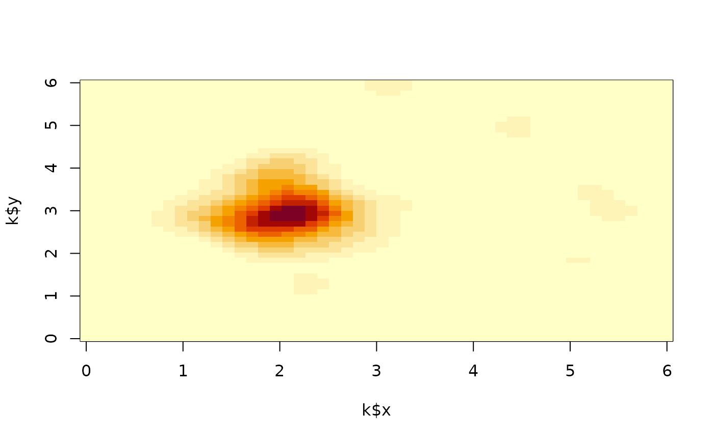

Where incidents cluster: the intensity lambda(u) = sum_j w_j k(u - p_j) with the product normal kernel of standard deviations h (along x
and y), in incidents per unit area, on a regular grid or at given
locations. On a grid it is the surface of MASS::kde2d() times the
number of points, with the same default bandwidth (the normal reference
1.06 min(sd, IQR / 1.34) n^(-1/5) on each axis, a quarter of
MASS::bandwidth.nrd()). With a study rectangle win the edge
corrections of spatstat.explore::density.ppp() apply: "uniform"
divides the intensity at u by e(u), the share of the kernel centred
at u inside win (Diggle 1985), and "diggle" divides each point's
kernel by its own share e(p_j) (Jones 1993). On a grid the smallest
sets of cells holding each share cover of the surface's mass (highest
density regions, Hyndman 1996) are reported with their area: half the
incidents in a few per cent of the map is concentration. The bandwidth
decides how sharp the surface is and should be reported with any map.
Usage
kdsurf(
x,
y = NULL,
w = NULL,
h = NULL,
win = NULL,
nx = 100,
ny = nx,
edge = "none",
at = NULL,
cover = c(0.5, 0.9)
)Arguments
- x, y
The points in planar coordinates (project longitude and latitude with
eqproj()first):xandynumeric vectors of equal length, orxa matrix or data frame with columns namedxandy. At least two points; no missing values.- w
NULL, or one weight from 0 per point.- h
NULLfor the normal reference bandwidths, or one or two positive numbers: the kernel's standard deviations along x and y.- win
NULL, or the study rectanglec(xmin, xmax, ymin, ymax): the grid's extent (otherwise the points' range widened by3 h), and needed by an edge correction.- nx, ny
The grid's number of columns and rows: whole numbers from 2.
- edge
"none","uniform"or"diggle".- at
NULLfor the grid;"points"for the intensity at each point, leaving the point itself out; or coordinates (as forx) to evaluate at.- cover
Shares between 0 and 1 of the surface's mass for the regions.
Value
A list of class kdsurf: x, y (the grid's coordinates, or
the evaluation points), z (the intensity: a matrix with one row per
x and one column per y on a grid, NaN where win holds none of
the kernel, otherwise a vector), h (the standard deviations used)
and regions (NULL off the grid): a data frame of cover, level
(the lowest intensity in the region), area and share (of the
grid's area).
References
Diggle, P. J. (1985). A kernel method for smoothing point process data. Journal of the Royal Statistical Society, Series C, 34(2), 138-147. doi:10.2307/2347366
Jones, M. C. (1993). Simple boundary correction for kernel density estimation. Statistics and Computing, 3(3), 135-146. doi:10.1007/BF00147776
Hyndman, R. J. (1996). Computing and graphing highest density regions. The American Statistician, 50(2), 120-126. doi:10.1080/00031305.1996.10474359
Examples
set.seed(1)
p <- cbind(x = c(rnorm(80, 2, 0.5), runif(40, 0, 6)),
y = c(rnorm(80, 3, 0.5), runif(40, 0, 6)))
k <- kdsurf(p, win = c(0, 6, 0, 6), nx = 50, edge = "uniform")
k
#> kdsurf: 50 x 50 grid, sd 0.2794 by 0.2655, peak 49.54
#> cover level area share
#> 0.5 13.021117 2.413994 0.0644
#> 0.9 1.626066 15.773428 0.4208
image(k$x, k$y, k$z)

kdsurf(p, h = 0.4, at = "points")$z[1:5]
#> [1] 27.05935 34.01434 21.47548 14.47467 30.98250